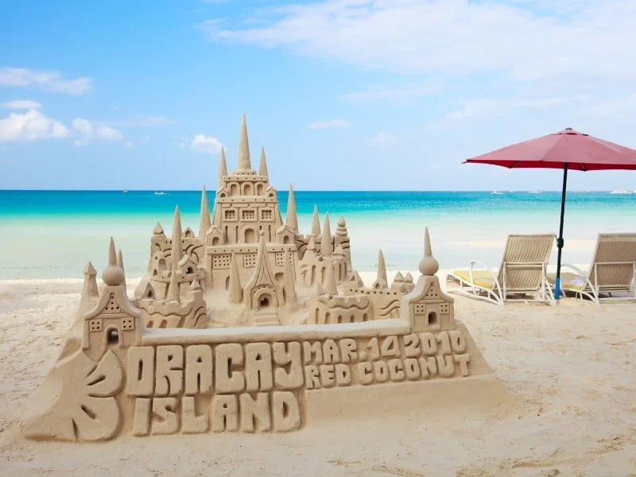
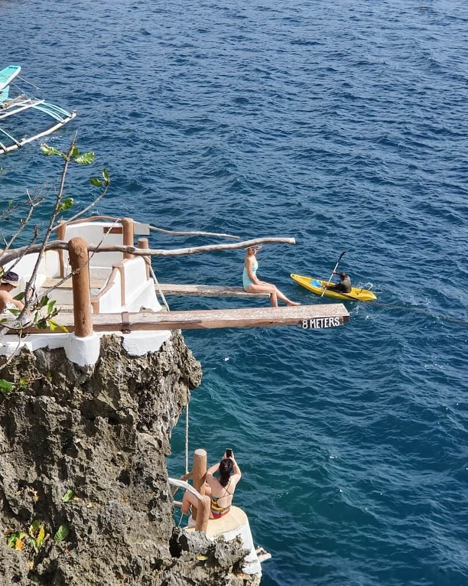
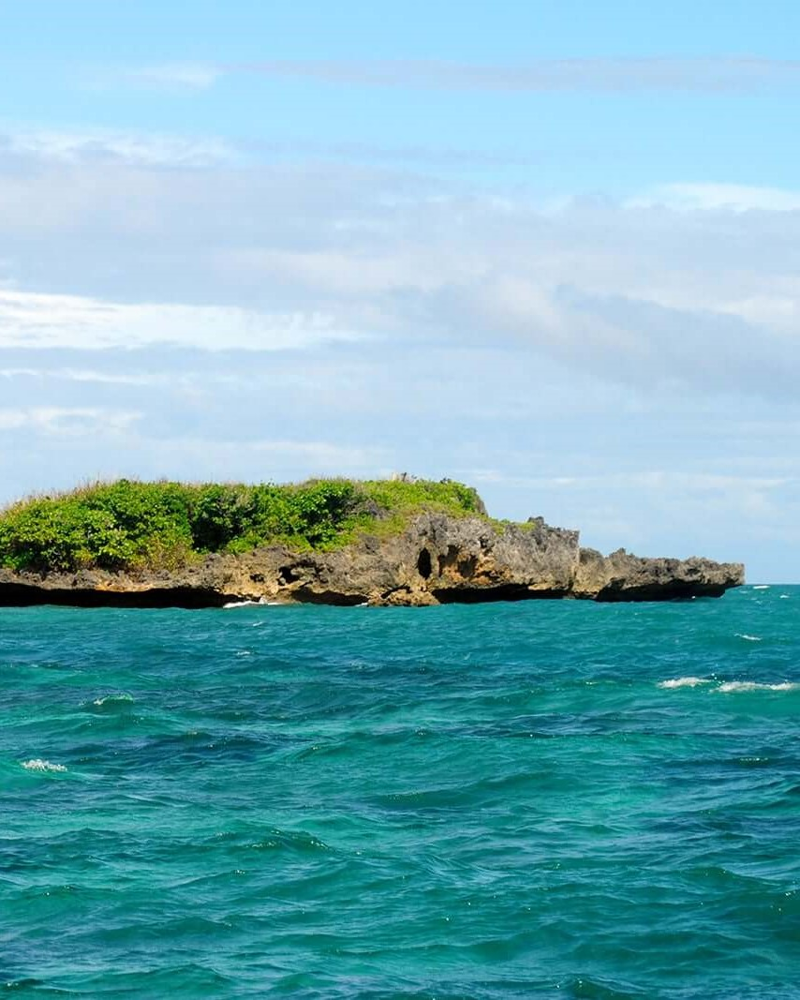
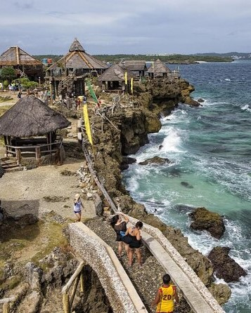
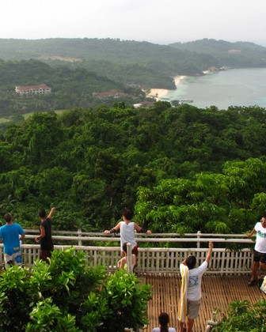

Step into a dream of sun, sand, and sea! Boracay has been on my must-visit list for so long, and I can't wait to experience its beauty firsthand. From the stunning views to the exciting activities and the island’s unique charm, there’s so much to look forward to. Take a look at what makes Boracay special to me

Boracay, a world-renowned island in Malay, Aklan, is famous for its white sand beaches, crystal-clear waters, and vibrant nightlife. The iconic White Beach stretches 4 kilometers, lined with resorts, restaurants, and entertainment hubs. Visitors can enjoy activities like island hopping, parasailing, snorkeling, and scuba diving while witnessing breathtaking sunsets.
I want to visit Boracay to experience its beauty and relaxed beach lifestyle. I’m excited to try ocean activities like banana boat rides and snorkeling, even though I’m not the best swimmer. Most of all, I want to see what makes Boracay truly special compared to other beaches.

#Ariel's_Point

#Willy's Rock

#Crystal_Cove

#Mount_Luho